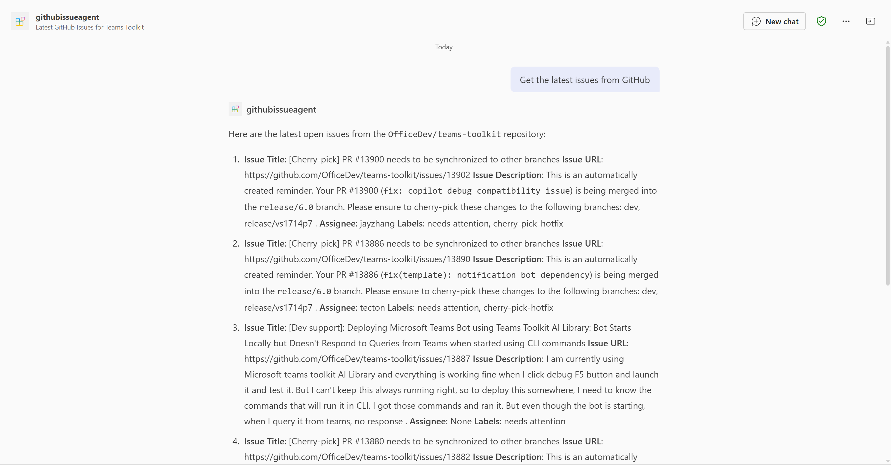

Declarative agent built with TypeSpec for Microsoft 365 Copilot.
With the declarative agent, you can build a custom version of Copilot that can be used for specific scenarios, such as for specialized knowledge, implementing specific processes, or simply to save time by reusing a set of AI prompts. For example, a grocery shopping Copilot declarative agent can be used to create a grocery list based on a meal plan that you send to Copilot.
Prerequisites
To run this app template in your local dev machine, you will need:
- Node.js, supported versions: 18, 20, 22
- A Microsoft 365 account for development.
- Microsoft 365 Agents Toolkit Visual Studio Code Extension version 5.0.0 and higher or Microsoft 365 Agents Toolkit CLI
- Microsoft 365 Copilot license

npm install to install dependencies before working with TypeSpec files.main.tsp to configure your agent and its plugins. This is the default entry point for TypeSpec files. Preview Local in Copilot (Edge) or Preview Local in Copilot (Chrome) from the launch configuration dropdown.Copilot app.| Folder | Contents |
|---|---|
.vscode |
VSCode files for debugging |
appPackage |
Templates for the application manifest, the manifest and the API specification |
src/agent/actions |
All action files representing API surfaces |
env |
Environment files |
src/agent/prompts |
All prompt files used for instructions |
scripts |
Scripts helping with automation across the build process |
The following files can be customized and demonstrate an example implementation to get you started.
| File | Contents |
|---|---|
appPackage/manifest.json |
application manifest that defines metadata for your declarative agent. |
The following are Microsoft 365 Agents Toolkit specific project files. You can visit a complete guide on Github to understand how Microsoft 365 Agents Toolkit works.
| File | Contents |
|---|---|
m365agents.yml |
This is the main Microsoft 365 Agents Toolkit project file. The project file defines two primary things: Properties and configuration Stage definitions. |
The following are TypeSpec template files. You need to customize these files to configure your agent.
| File | Contents |
|---|---|
src/agent/main.tsp |
This is the root file of TSP files. Please manually update this file to add your own agent. |
src/agent/actions/*.tsp |
These are action files containing API endpoints to extend your declarative agent. |
src/agent/prompts/*.tsp |
These are prompt files used for instructions inf your declarative agent. |
src/agent/env.tsp |
This is the file containing all environment variables to be used in TypeSpec files. |